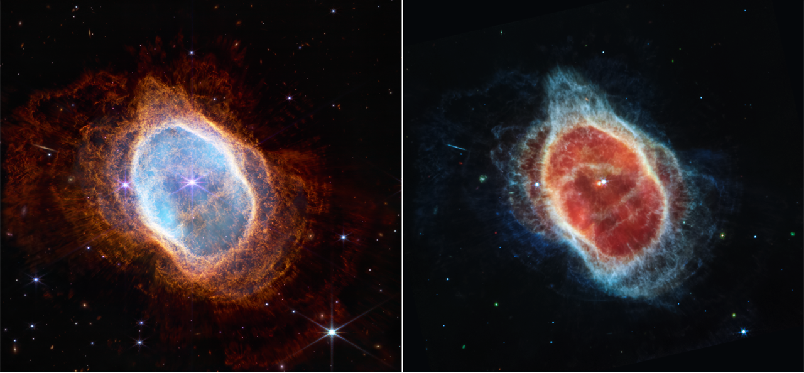
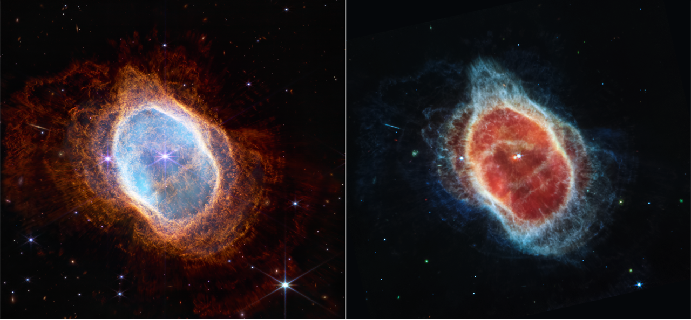

Gallery released on July 12, 2022. Webb’s near- to mid-infrared sensitivity, and high-resolution imaging and spectroscopic capabilities have already revealed parts of the universe hidden to our eyes, such as stars among clouds of dusts, water in the atmospheres of other worlds, and the deepest image of the universe ever taken.
James Webb Space Telescope
The James Webb Space Telescope (JWST) is a space telescope designed primarily to conduct infrared astronomy. As the largest optical telescope in space, its increased infrared resolution and sensitivity allow it to view objects too early, distant, or faint for the Hubble Space Telescope. This is expected to enable a broad range of investigations across the fields of astronomy and cosmology, such as observation of the first stars and the formation of the first galaxies, and detailed atmospheric characterization of potentially habitable exoplanets.[8][] The U.S. National Aeronautics and Space Administration (NASA) led JWST's development in collaboration with the European Space Agency (ESA) and the Canadian Space Agency (CSA). The NASA Goddard Space Flight Center (GSFC) in Maryland managed telescope development, the Space Telescope Science Institute in Baltimore on the Homewood Campus of Johns Hopkins University operates JWST, and the prime contractor was Northrop Grumman. The telescope is named after James E. Webb, who was the administrator of NASA from 1961 to 1968 during the Mercury, Gemini, and Apollo programs. The James Webb Space Telescope was launched on 25 December 2021 on an Ariane 5 rocket from Kourou, French Guiana, and arrived at the Sun–Earth L2 Lagrange point in January 2022. The first image from JWST was released to the public via a press conference on 11 July 2022.[9] The telescope is the successor of the Hubble as NASA's flagship mission in astrophysics. JWST's primary mirror consists of 18 hexagonal mirror segments made of gold-plated beryllium, which combined create a 6.5-meter-diameter (21 ft) mirror, compared with Hubble's 2.4 m (7 ft 10 in). This gives JWST a light-collecting area of about 25 square meters, about six times that of Hubble. Unlike Hubble, which observes in the near ultraviolet and visible (0.1 to 0.8 μm), and near infrared (0.8–2.5 μm)[10] spectra, JWST observes in a lower frequency range, from long-wavelength visible light (red) through mid-infrared (0.6–28.3 μm). The telescope must be kept extremely cold, below 50 K (−223 °C; −370 °F), such that the infrared light emitted by the telescope itself does not interfere with the collected light. It is deployed in a solar orbit near the Sun–Earth L2 Lagrange point, about 1.5 million kilometers (930,000 mi) from Earth, where its five-layer sunshield protects it from warming by the Sun, Earth, and Moon. Initial designs for the telescope, then named the Next Generation Space Telescope, began in 1996. Two concept studies were commissioned in 1999, for a potential launch in 2007 and a US$1 billion budget. The program was plagued with enormous cost overruns and delays; a major redesign in 2005 led to the current approach, with construction completed in 2016 at a total cost of US$10 billion. The high-stakes nature of the launch and the telescope's complexity were remarked upon by the media, scientists, and engineers.
 



First Time Webb, Hubble Make Simultaneous Observations of the Same Target
Two of NASA’s great observatories had a front row seat to a first of its kind NASA test for defending Earth against potential asteroid or comet hazards. NASA’s James Webb Space Telescope and Hubble Space Telescope teamed up to collect data before and after NASA’s Double Asteroid Redirection Test (DART) intentionally slammed into Dimorphos, the asteroid moonlet in the double-asteroid system of Didymos, at nearly 15,000 miles per hour. Not only will ground-based telescope observations help determine how successful the test was in altering the asteroid’s orbit, but the combined capabilities of Webb and Hubble together —on the same target, at the same time— will allow scientists to analyze a wide array of data relating to the makeup and history of our solar system.